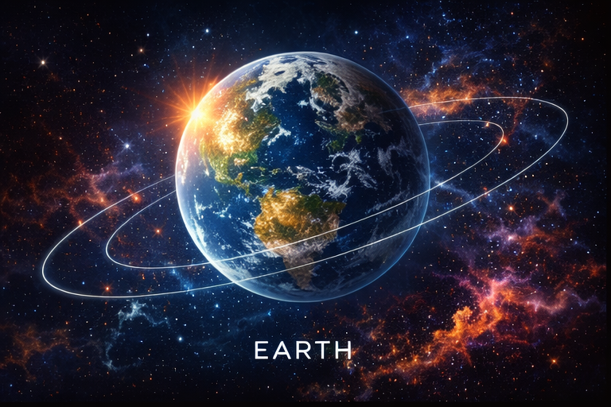
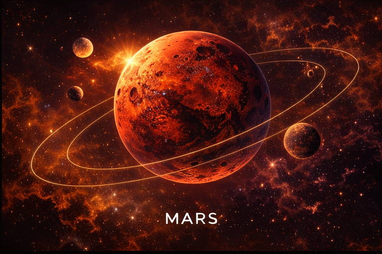
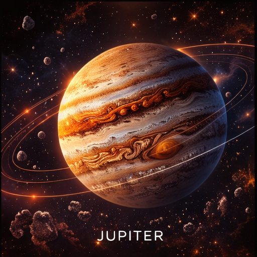
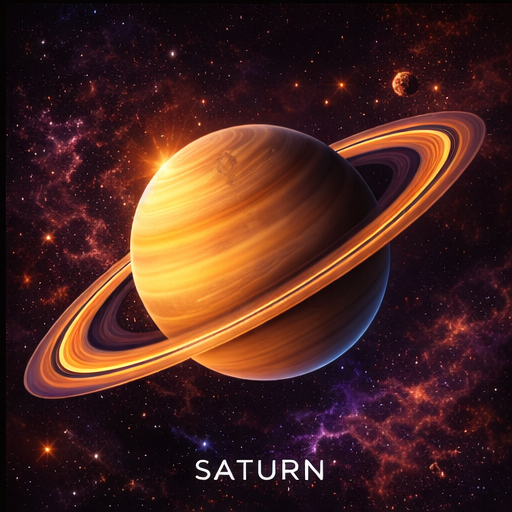

| Planet 1 | Planet 2 | Planet 3 | Planet 4 | |
|---|---|---|---|---|
| Images of Planets |  |
 |
 |
 |
| Fact #1 | Earth is the third planet from the Sun and the only planet known to have life | Mars is often called the Red Planet because iron-rich dust gives its surface a reddish appearance. | Jupiter is the largest planet in the solar system. It is a gas giant made mainly of hydrogen and helium, so it does not have a solid outer surface like Earth or Mars. | Saturn is famous for its bright and beautiful rings, which are made up of countless pieces of ice and rock |
| Fact #2 | It sits at a distance where temperatures allow liquid water to exist, which is one of the main reasons it can support living things. | It has some of the most remarkable landforms in the solar system, including Olympus Mons, an enormous volcano, and channels that show water likely flowed there long ago | One of its best-known features is the Great Red Spot, a gigantic storm that has been active for a very long time. | Like Jupiter, it is a gas giant composed mostly of hydrogen and helium. |
| Fact #3 | Its atmosphere is mostly nitrogen and oxygen, helping protect the planet from harmful radiation and small space debris | Its atmosphere is very thin and made mostly of carbon dioxide, so the planet is cold and dry today. | Jupiter also spins very quickly, giving it the shortest day of any planet, and it has a very large number of moons | Saturn has a very low density compared with the other planets and rotates rapidly on its axis |
| Fact #4 | Earth is the only known planet with vast oceans on its surface, giving it the nickname the Blue Planet. | Mars has two small moons, named Phobos and Deimos, that are much smaller than Earth’s moon. | Jupiter gives off more heat than it receives from the Sun, which makes it unusual among the planets. | Saturn’s rings are not solid circles — they are made of countless separate pieces moving around the planet together. |
| Fact #5 | A full trip around the Sun takes Earth about 365 days, which is why we have one year. | The planet experiences powerful dust storms that can spread across huge areas. | It has a very strong magnetic field, far more powerful than Earth’s. | Strong winds race through Saturn’s atmosphere at extremely high speeds. |
| Fact #6 | Earth’s moon helps create the ocean tides and also affects the planet in important ways. | Mars has polar ice caps that grow and shrink with the seasons. | Jupiter is surrounded by many thin cloud bands, which give the planet its striped look. | One of Saturn’s moons, Titan, is so special because it has a thick atmosphere, unlike most moons. |
| Fact #7 | The planet has a layered structure with a crust, mantle, and core, and its outer shell is constantly changing over time. | A day on Mars is very close to an Earth day, lasting a little more than 24 hours. | Some of Jupiter’s most famous moons, such as Io, Europa, Ganymede, and Callisto, are worlds of their own with unique features. | Saturn appears pale golden from space because of the gases and haze in its upper atmosphere. |